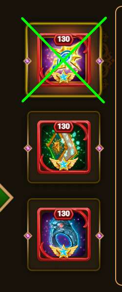
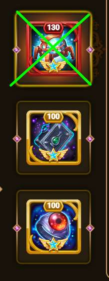
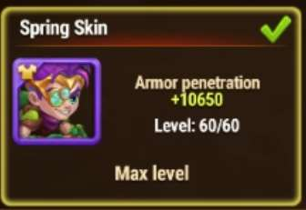
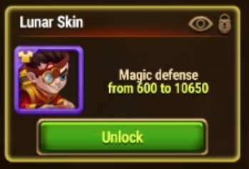

🍕 I 5 Più Grandi Errori nel Team OSH 🍕
| Vediamoli Insieme |
|---|
|
Errore 1: Primo Artefatto di Cornelius
Il primo artefatto di Cornelius, con la sua attivazione,

fornisce difesa magica a tutta la squadra. Questo impedisce a ISAAC di caricare la sua ultimate. Il tempo necessario per eseguire la sequenza di attacco è notevolmente ridotto. Di conseguenza, anche le possibilità di successo sono notevolmente ridotte. |
|
Errore 2: Il Primo Artefatto di Isaac
Il primo artefatto di Isaac dovrebbe avere valori precisi.

Questo artefatto fornisce penetrazione armatura a tutta la squadra. Questo artefatto ha bisogno di ricevere attacchi magici per essere caricato. Gli attacchi magici provengono dalle sfere OSH. Se la penetrazione armatura è troppo alta o al livello sbagliato, altri eroi, come Cornelius, non saranno in grado di infliggere il giusto ammontare di danni a OSH. A maggio 2025 il valore ottimale per questo artefatto è 114. Aumentarlo oltre questo livello può peggiorare le cose. Tuttavia, fino al livello 118-120 in molti casi non causa problemi. |
|
Errore 3: Skin Primavera di Isaac
La skin primavera di ISAAC aumenta la penetrazione armatura di ISAAC.

Questo è uno svantaggio perché aumenta il rischio di distruggere le sue sfere di ricarica in anticipo. È persino peggio del primo artefatto poiché non offre alcuna statistica ad altri eroi. |
|
Errore 4: Il Secondo Artefatto di Isaac
Il secondo artefatto di Isaac aumenta l'attacco fisico e la penetrazione armatura.
L'aumento del danno da attacco potrebbe anche essere positivo, ma la penetrazione armatura è altamente dannosa per le ragioni spiegate nei punti precedenti. 
|
|
Errore 5: Skin Lunare di Isaac
La skin lunare di Isaac aumenta la difesa magica dell'eroe.

In molti casi può ancora rientrare in valori tollerabili. Sconsiglio comunque di potenziarla. Il danno magico è usato da Isaac per caricarsi. Se hai qualche domanda
chiedi aiuto al tuo migliore compagno di gilda OSH 🤓 |